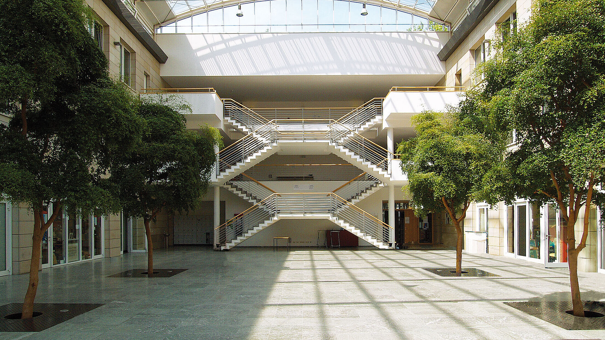

Venue
The workshop will be organized at Asia-Africa Institute located at Edmund-Siemers-Allee 1 (East Side), 20146 Hamburg, Germany.

Transportation
Arriving by plane: Hamburg has an international airport: HAM Hamburg Airport (https://www.airport-hamburg.com). After your arrival at Hamburg Airport you can use public transport to continue your journey. The airport's S-Bahn station is located directly under the Airport Plaza. Every 10 minutes, the S1 line leaves for the city centre. The journey time to the main station is only 25 minutes. Various HVV buses also stop directly in front of the terminals.
Using public transportation in Hamburg area is fairly easy. To find a route to your destination, use Journey Planner. Tickets can also be bought online using smartphone conveniently.
An example of Journey Planner:
From Airport to workshop venue
Accommodation Information
If you need accommodation, city centre has many options to choose from. Many are within walking distance from the venue or at least within a short tram or bus ride.
Hotel Preuss Im Dammtorpalais
A moderately priced hotel and closer to the venue.
Link: Hotel Preuss Im Dammtorpalais
Hotel Wagner im DAMMTORPALAIS Hamburg
Moderately priced hotel, walkable distance to venue.
Link: Hotel Wagner im DAMMTORPALAIS
IBIS Hotel Hamburg Alster Centrum
Moderately priced hotel, walkable distance to venue
Link: IBIS Hotel Hamburg Alster Centrum
IBIS Hamburg City Hotel Hamburg
Located closer to several businesses in the city including the main train station, this hotel is a good choice if you don't mind a bit longer travel time to the venue.
Link: IBIS Hamburg City Hotel
Premier Inn Hamburg City Centre Hotel
Located at the heart of city centre, close to the Altstadt, and St. Nikolai Memorial. This hotel offers everything you'd expect from a bigger hotel for a moderate price. The venue can be reached easily with a tram and short walk.
Link: Premier Inn City Centre hotel